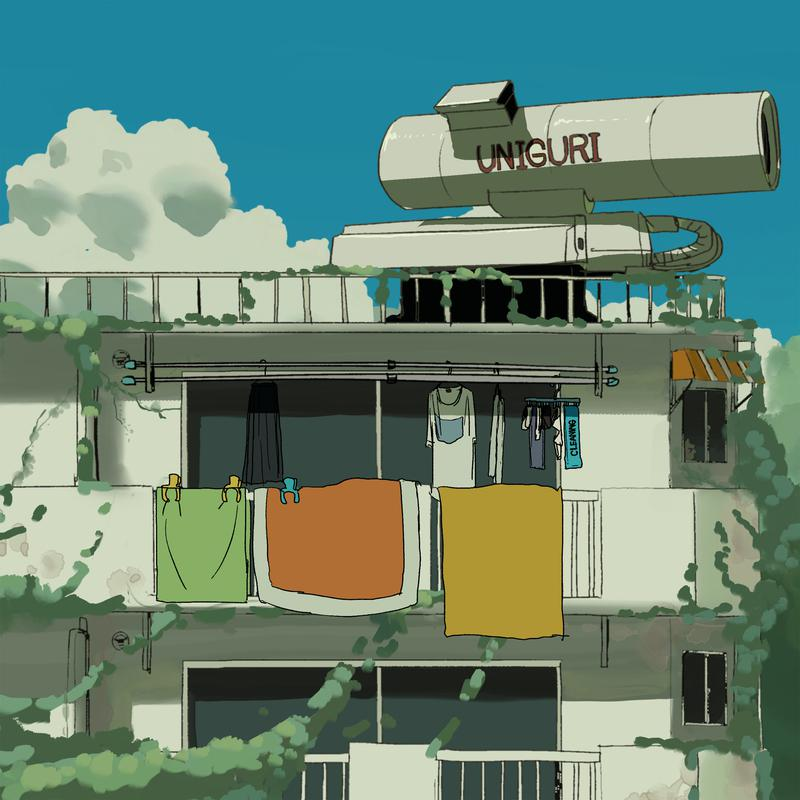

发布于 2020/11/27 共 1 首歌
ずっと真夜中でいいのに的新专辑「勘ぐれい」由EMI Records于2020 年 11 月 27 日在各种音乐发行服务上发行。
试听曲：ヨルシカ - 思想犯 例えばの話だけしてた 总在聊着假设的事 これまでの夢語ってた 至今为止全部的梦想 煮えたかどうだか 不管是否已经煮熟 齧る度に嘘ついた 吃一口就种下个谎言 これで終わらせたくて 只想要终结这一切 草を毟り水をやり 拔颗草再浇点水 鉛を炒め生きてる 我用铅来作调料 後悔 遗憾 それどころじゃない 现在还不是时候 焦りを糧に目覚める 唤醒以焦躁为养料的我 伝わらない形を今日も 今天仍是传达不到的样子 なにかを解決するには 要找到解决的办法 容易いことではないけれど 虽说并非易事 答えは別にある 但定另有答案 転回を嫌い 荒れ果てたこの世を 厌恶这轮回的荒凉世界 ねぇどうしたい 呐 要怎么办呢 見過ごせない僕がいい 我可不会无视 ほっときな 别丢下我 応えれば堪えるほど 越想回应 就越是忍耐 ねぇどうして 呐 为什么呢? 無気力な僕には戻れない 再也回不到那个无精打采的自己 駆け引きを続けて 伺机进退继续等待 草を無視り水をやり 无视杂草 浇灌淡水 鉛を炒め生きてる 我用铅来作调料 嫌えるほど律儀じゃない 没有令人讨厌的规则 優しい余白で目を見る 温柔又空白的眼神注视着你 伝わらない形を今日も 今天仍是传达不到的样子 なにかを解決するには 要找到解决的办法 容易いことではないけれど 虽说并非易事 答えは別にある 但一定另有答案 転回を嫌い 荒れ果てたこの世を 厌恶这轮回的荒凉世界 ねぇどうしたい 呐 要怎么办呢 見過ごせない僕がいい 我可不会无视 ほっときな 别丢下我 応えれば堪えるほど 越想回应 就越是忍耐 ねぇどうして 呐 为什么呢? 無気力な僕には戻れない 再也回不到那个无精打采的自己 駆け引きを続けて 伺机进退继续等待 錆び付いた硝子で 用生锈的玻璃 緊張を解いて 缓解紧张的情绪 一か八かで呼吸知る 听天由命 知晓呼吸 錆び付いた勘ぐれい 我衰退的直觉 緊張を解いて 缓解焦灼的情绪 一か八かで呼吸聞く 听天由命 聆听呼吸 展開を嫌い 荒れ果てたこの世を 厌恶这轮回的荒凉世界 ねぇどうしたい 呐 要怎么办呢 見過ごせない僕がいい 我可不会无视 ほっときな 别丢下我 応えれば答えるほど 越想回应 就越是忍耐 ねぇどうして 呐 为什么呢? 無気力な僕には戻れない 再也回不到那个无精打采的自己 駆け引きを続けて 伺机进退继续等待